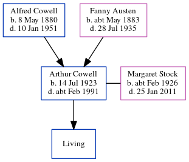

Arthur Thomas Cowell 1923 - c1991
[ Home ] | [ Calendar ] | [ Surnames Index ] | [ Census Index ] | [ Family History ]The child of Alfred Cowell (a transport driver) and Fanny Austen, Arthur Cowell, the first cousin once-removed on the mother's side of Nigel Horne, was born in Thanet, Kent, England on Jul 14, 19231,2,3 and. He married Margaret Stock (with whom he had 1 surviving child, John E A) at St Mary the Virgin Church, Minster in Thanet on Nov 24, 19454.
During his life, he was living Minster in Thanet in 1945; at 30 Albert Street, Ramsgate, Kent, England in 19536; and at Sunnymead, Fairfield Road, Minster in Thanet in 19555.
He died c. Feb 1991 in Canterbury, Kent, England3.
Parents
- Alfred John was born on May 8, 1880
- Fanny was born c. May 1883
Citations
- England & Wales deaths 1837-2007 - Findmypast
- England & Wales, Birth Index: 1916-2005 Online publication - Provo, UT, USA: The Generations Network, Inc., 2008.Original data - General Register Office. England and Wales Civil Registration Indexes. London, England: General Register Office. © Crown copyright. Published by permission of the Cont
- England & Wales, Death Index: 1984-2005 Online publication - Provo, UT, USA: The Generations Network, Inc., 2007.Original data - General Register Office. England and Wales Civil Registration Indexes. London, England: General Register Office. © Crown copyright. Published by permission of the Cont
- England & Wales, Marriage Index: 1916-2005 Online publication - Provo, UT, USA: The Generations Network, Inc., 2009.Original data - General Register Office. England and Wales Civil Registration Indexes. London, England: General Register Office. © Crown copyright. Published by permission of the Cont
- 1955 Kelly's Thanet Directory
- 1953 Kelly's Thanet Directory
Media
Thanet Advertiser 30 Nov 1945

Thanet Advertiser - 4 Dec 1945

1955 Kelly's Thanet Directory

1953 Kelly's Thanet Directory

England & Wales marriages 1837-2008 - BMD/M/1945/4/AZ/000304/080
England & Wales births 1837-2006 Transcription - BMD-B-1923-3-AZ-000284-129
England & Wales deaths 1837-2007 Transcription - BMD-D-1991-2-78352363
Family Tree
Generated by ged2site. Last updated on Jun 11, 2024